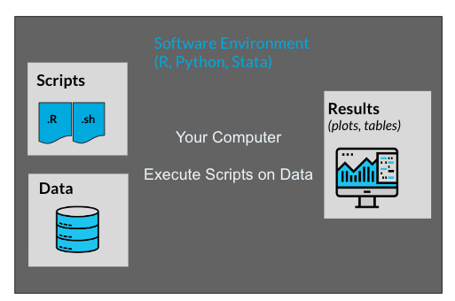
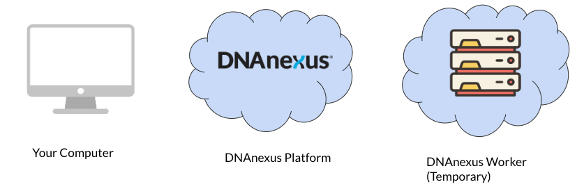
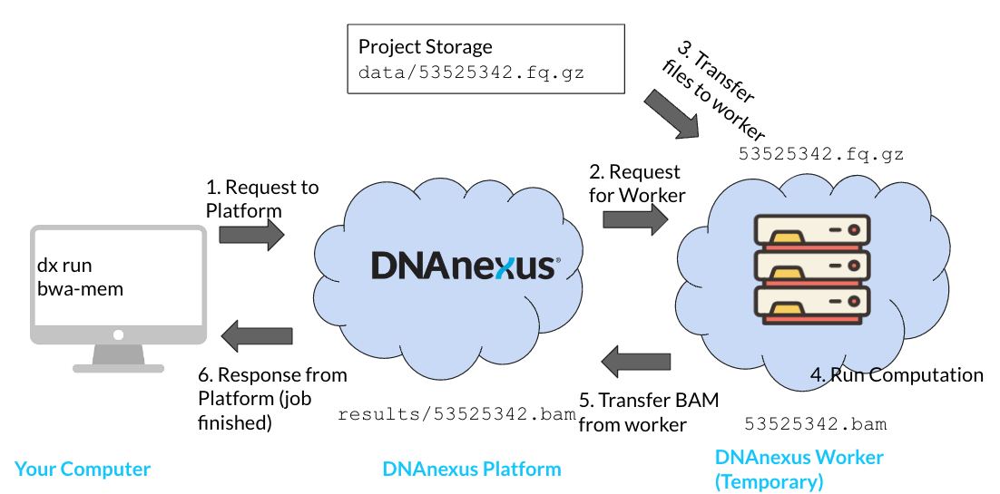
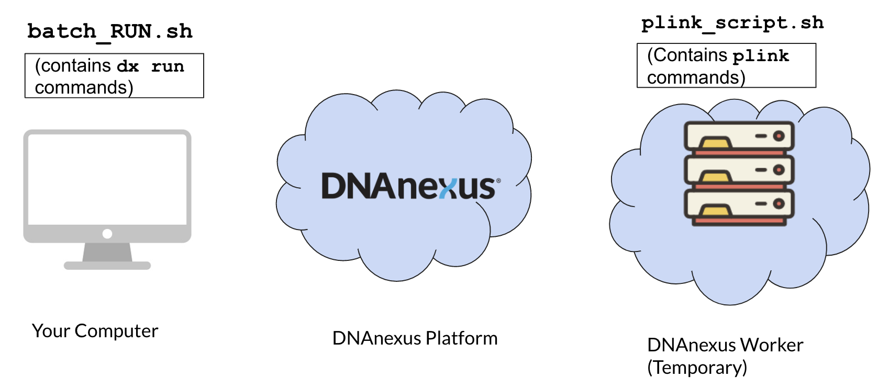
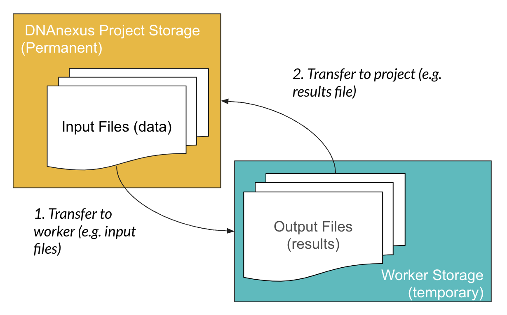
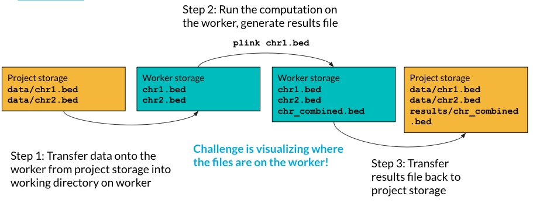
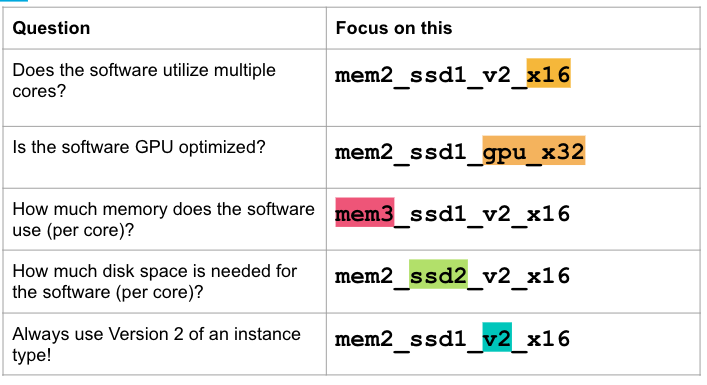

graph LR A["mem1_ <br> (Memory)"] --> C["ssd1_ <br> (Disk Size)"] C --> E["v2_ <br> (Version)"] E --> G["x4 <br> (Cores)"]
4 Cloud Computing Basics
We all need to start somewhere when we work with cloud computing.
This chapter is a review of how cloud computing works on the DNAnexus platform. If you haven’t used cloud computing before, no worries! This chapter will get you up to speed.
Also, if you are coming from using an on-premise high performance computing (HPC) cluster, you can skip ahead.
4.1 Learning Objectives
- Define key players in both local computing and cloud computing
- Articulate key differences between local computing and cloud computing
- Describe the sequence of events in launching jobs in the DNAnexus cloud
- Differentiate local storage from cloud-based project storage
- Describe instance types and how to use them.
4.2 Important Terminology
Let’s establish the terminology we need to talk about cloud computing.
- DNAnexus Project - contains files, executables (apps/applets), and logs associated with analysis.
- Software Environment - everything needed to run a piece of software on a brand new computer. For example, this would include installing R, but also all of its dependencies as well.
- App/Applet - Executable on the DNAnexus platform.
- Project Storage - Part of the platform that stores our files and other objects. We’ll see that these other objects include applets, databases, and other object types.
4.3 Understanding the key players
In order to understand what’s going on with Cloud Computing, we will have to change our mental model of computing.
Let’s contrast the key players in local computing with the key players in cloud computing.
4.3.1 Key Players in Local Computing

- Our Machine
When we run an analysis or process files on our computer, we are in control of all aspects of our computer. We are able to install a software environment, such as R or Python, and then execute scripts/notebooks that reside on our computer on data that’s on our computer.
Our main point of access to either the HPC cluster or to the DNAnexus cloud is going to be our computer.
4.3.2 Key Players in Cloud Computing
Let’s contrast our view of local computing with the key players in the DNAnexus platform (Figure 4.2).

- Our Machine - We interact with the platform via the dx-toolkit installed on our machine. When we utilize cloud resources, we request them from our own computer using commands from the dx toolkit.
- DNAnexus Platform - Although there are many parts, we can treat the DNAnexus platform as a single entity that we interact with. Our request gets sent to the platform, and given availability, it will grant access to a temporary DNAnexus Worker. Also contains project storage.
- DNAnexus Worker - A temporary machine that comes from a pool of available machines. We’ll see that it starts out as a blank slate.
4.4 Sequence of Events of Running a Job
Let’s run through the order of operations of running a job on the platform. Let’s focus on running an aligner (BWA-MEM) on a FASTQ file. Our output will be a .BAM (aligned reads) file.
Let’s go over the order of operations needed to execute our job on the DNAnexus platform (Figure 4.3).

- Start a job using
dx runto send a request to the platform. In order to start a job, we will need two things: an app (app-bwa-mem), and a file to process on the platform (not shown). We specify this information usingdx run. When we usedx run, a request is sent to the platform. - Platform requests for a worker from available workers; worker made available on platform. In this step, the DNAnexus platform looks for a worker instance that can meet our needs. The platform handles installing the app and its software environment to the worker as well. We’ll see that apps have a default instance type that are suggested by the authors.
- Input files transferred from project storage. We’re going to process a FASTQ file (
53525342.fq.gz). This needs to be transferred from the project storage to the worker storage on the machine. - Computations run on worker; output files are generated. Once our app is ready and our file is transferred, we can run the computation on the worker.
- Output files transferred back to project storage. Any files that we generate during our computation (
53525342.bam) must be transferred back into project storage. - Response from DNAnexus platform to User. If our job was successful, we will receive a response from the platform. This can be an email, or the output from
dx find jobs. If our job was unable to run, we will recieve a “failed” response.
When you are working on the platform, especially with batch jobs, keep in mind this order of execution. Being familiar with how the key players interact on the platform is key to running efficient jobs.
4.4.1 A Common Pattern: Scripts on your computer, scripts on the worker
A very common pattern we’ll use is having two sets of scripts (Figure 4.4). The batch script that generates the separate jobs run on separate workers (batch_RUN.sh), and a script that is run on each worker (plink_script.sh).
The batch script will specify file inputs as paths from project storage. For example, a project storage path might be data/chr1.vcf.gz.
The trick with the worker script is being able to visualize the location of the files on the worker after they’re transferred. In most cases, the files will be transferred to the working directory of the worker.

4.5 Key Differences with local computing
As you might have surmised, running a job on the DNAnexus platform is very different from computing on your local computer.
- We don’t own the worker machine, we only have temporary access to it. A lot of the complications of running cloud computations comes from this.
- We have to be explicit what kind of machine we want. We’ll talk much more about this in terms of instance types (Section 4.7)
- We need to transfer files to and from our temporary worker.
4.6 Project Storage vs Worker Storage

You might have noticed that the worker is a blank slate after we request it. So any files we need to process need to be transferred over to the temporary worker storage.
Fortunately, when we use apps, the file transfer process is handled by the app. This also means that when you build your own apps on the platform, you will need to specify inputs (what files the app will process) and outputs (the resulting files from the app).
4.6.1 Running Scripts on a Worker is Indirect
Because this file transfer occurs from project storage to the worker, when we run scripts on a worker, we have to think about the location of the files on the worker (Figure 4.6).

Let’s look at an example of that nestedness. Say we have two bed files and we want to combine them on a worker using PLINK.
- Transfer data from project to the working directory on the worker. The first thing we need to do is transfer them from project storage to worker storage. Notice that even though in project storage they are in a data folder, they are in the base directory of the worker.
- Run the computation on the worker, and generate results file. The files we need to process are in the base directory of the worker, so we can refer to them without the folder path (
plink chr1.bed). We generate a results file calledchr_combined.bed(the combined.bedfile).
- Transfer results file back to the project storage.
4.7 Instance Types
One of the major concerns when you’re getting started on the platform is cost.
What impacts cost? The number of workers and your priority for those workers matters. Most importantly, the instance type matters (Figure 4.7). Let’s review how to pick an instance type on the platform.
First off, all apps (including Swiss Army Knife) have a default instance selected.
This is an example of an instance type. We can see that it has four sections: a memory class (mem1), a disk space class (ssd1), a version (v2), and the number of CPUs (x4). Together, this combination of classes forms an instance type.

Let’s talk about what aspects to concentrate on when choosing your instance type.
Read the Swiss Army Knife documentation
When you run Swiss Army Knife from the command line, the default instance type is mem1_ssd1_v2_x4 - how many cores are available in this instance?
4.7.1 When to Scale Up or Down?
One question we often get is about when to scale up and down instance types in terms of resource usage. It’s important when you’re starting out to do profiling of the app on a data file or dataset that you know well. Start with the default instance type for an app on your test files at first.
Once you have run an app as a job, you can look at the job log to understand how the compute resources were utilized.
In this case, our job under utilized the compute resources on our instance type, so we might want to scale to a lower instance type.
If our job crashed due to a lack of resources, or is running slow, we may want to scale up our resource type.